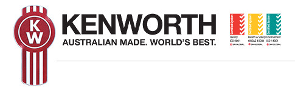
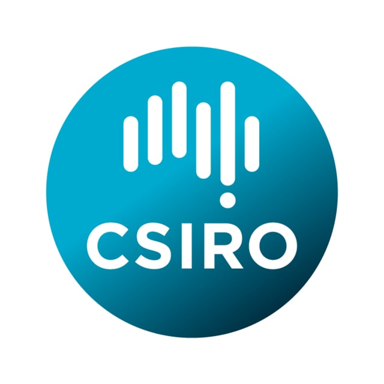

Professional Summary.
Graduate Mechatronics Engineer with experience and a demonstrated history of excellent performance.
Passionate and skilled in various programming languages, mainly JavaScript (React framework, Auth0 authentication, NodeJS server-side programming), C++ and Java.
A passionate tinkerer at heart, loves to do DIY projects; such as building a DIY 3D printer, with plans to design and build a CNC machine.
Skilled in problem solving, innovative thinking, with good judgement and decision-making skills;
Flexible and highly organised, with ability to juggle priorities, work in a team, and meet tight deadlines;
Excellent communicator and interpersonal-savvy, with fluent speaking and writing abilities
Acedemic accomplishments.
Bachelors Degree of Mechatronics Engineering
Graduated from Monash University in 2016 with Honours.
Monash University representative during the 2016 University Open Day.
Achieved excellent praise from CSIRO's Director of the AIM department during the industrial-based learning at CSIRO as part of the final year project in 2015.
Previous work experience.
-

KENWORTH
Feb 2017 - Current
Joined the industrial giant in the trucking industry - Kenworth as an engineering graduate early 2017 immediately upon graduation.
Database Systems Engineer
April 2018 - Present- Continuous improvement and maintenance of existing processes and the configuration of automatic bills of materials selection for the KENWORTH product.
- Visual Basic development to automate and improve processes
- Exposure to the JDE framework
- Implementation of processes and documentation using IBM’s Lotus Notes
Engineering Graduate - Sales Coordinator
February 2017 - March 2018- Interdepartmental liaison between the engineering department and various dealerships to deliver custom application-built trucks.
- Ensuring that each individual custom-built truck meets the expectation of the customers and the company’s standards in both contractual terms and its physical manifestation.
- Delivering high standards of technical information to the dealerships and customers.
-
MOTOROLA SOLUTIONS
Oct 2015 - Mar 2016
Obtained an RnD internship over the summer holidays in my penultimate year at Monash University at Motorola Solutions.
Software Engineer Intern - Research and Development
October 2015 - March 2016- Development of android firmware to implement communication and file transfer between existing Motorola devices with Android devices via Wireless Communication through TCP connection as a proof of Concept project.
- Coordinated and participated in software design and code review;
- Writing reports and conducting knowledge sharing with involved departments.
- Programming using Android JAVA and C++.
-

CSIRO
Feb 2015 - Oct 2015
Obtained an industrial based trainee role as part of my final year project at CSIRO.
Industrial-based Engineering Trainee
February 2015 - November 2015- Implementation of an Automated Heat Treatment Facility.
- Involved in research on safety mechanisms and OHS implementations needed in a safe work environment.
- CAD modelling for prototyping and proof of concept for stakeholders.
- Programming and integration of an IRB1600 ABB industrial robot.
Notable Projects.
Motorola Device Integration
Plan and develop a proof of concept project to integrate existing UHF radio hardware to communicate via WiFi / Bluetooth.
The objective of the project is to create a link between UHF radios
with devices such as mobile phones, WiFi cameras, etc in order to incorporate data
transmission.
Technologies used:
Motorola hardware: UHF Radios
Android
Java
TCPIP CommunicationFor this project, I created an Android application allows data transmission between the Android
device and the Motorola UHF Radio over WiFi using sockets via the TCPIP transmission
protocol written in Java.
Throughout this project, I have also led several infomatic sessions on Android Development.
Autonomous Racing Car Design
Design and engineering of a fully autonomous racing car.
The objective of the project is to have the RC car maneuver
the track without human intervention,
using geometric sensors, and computer vision image processing.
Technologies used:
Embedded microcontrollers
Linux
C++
OpenCVFor this project, I made use of Sparkfun's ARM microcontroller as the
main connection to the sensors, while a BeagleBone Black ARM microprocessor
was used to receive the sensor data serially through Bluetooth communication
from the microcontroller. The data is then used to do real-time processing in C++.
The three main sensors used were an accelerometer for positioning, magnetometer for direction,
and a camera for image processing using OpenCV for headings.
Automated Heat Treatment Facility
Design and implementation of an automated facility for the CSIRO chemical research department.
The objective of this project was to automate the labour intensive day to day tasks of the scientists to improve productivity and safety by having a mechanic arm perform the heat treatment experimentations.
Technologies used:
ABB IRB1600 Robotic arm
RAPID programming language
C++ Qt5 for UI design
SolidWorks - CAD modellingFor this project, we were provided with an ABB IRB robotic arm as the main tool to implement the facility automation.
Using SolidWorks, we were able to draft the layout of the facility and visually demonstrate the functionality of the robotic arm in an enclosed area successfully to gain the approval and confidence of the engineers and to be OH&S certified.
Using ABB's inhouse programming language RAPID, I programmed the robotic arm to perform certain tasks depending on the requirement of each experiment which is integrated to the timing output of the heat treatment ovens through TCP Communication.